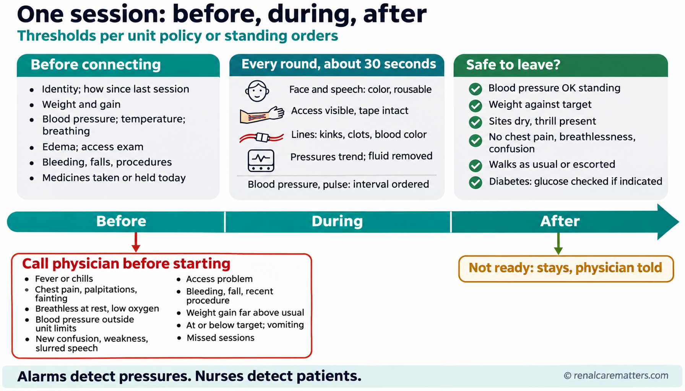
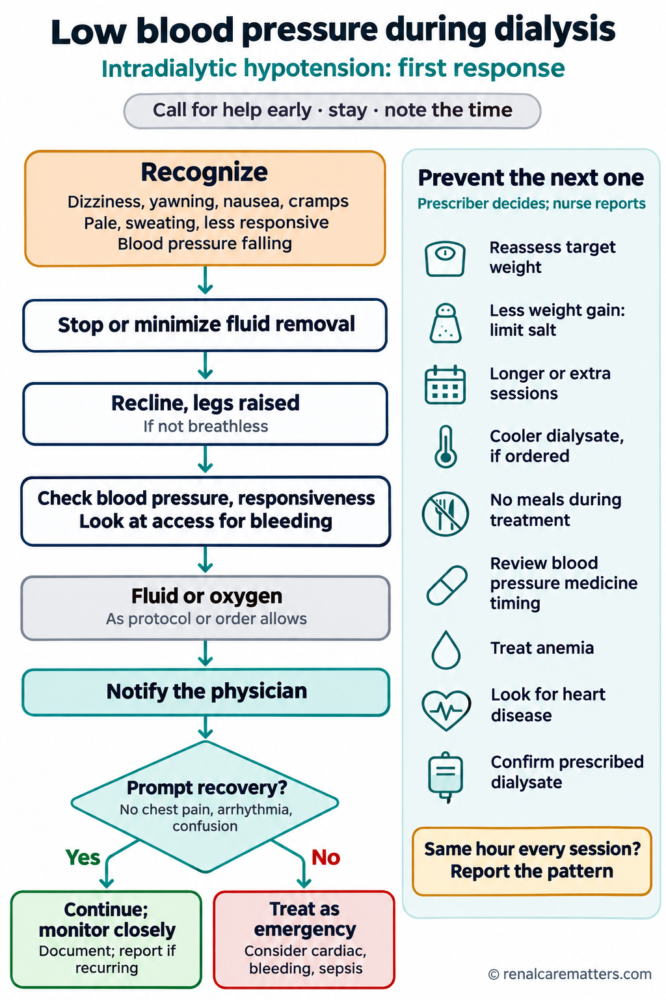
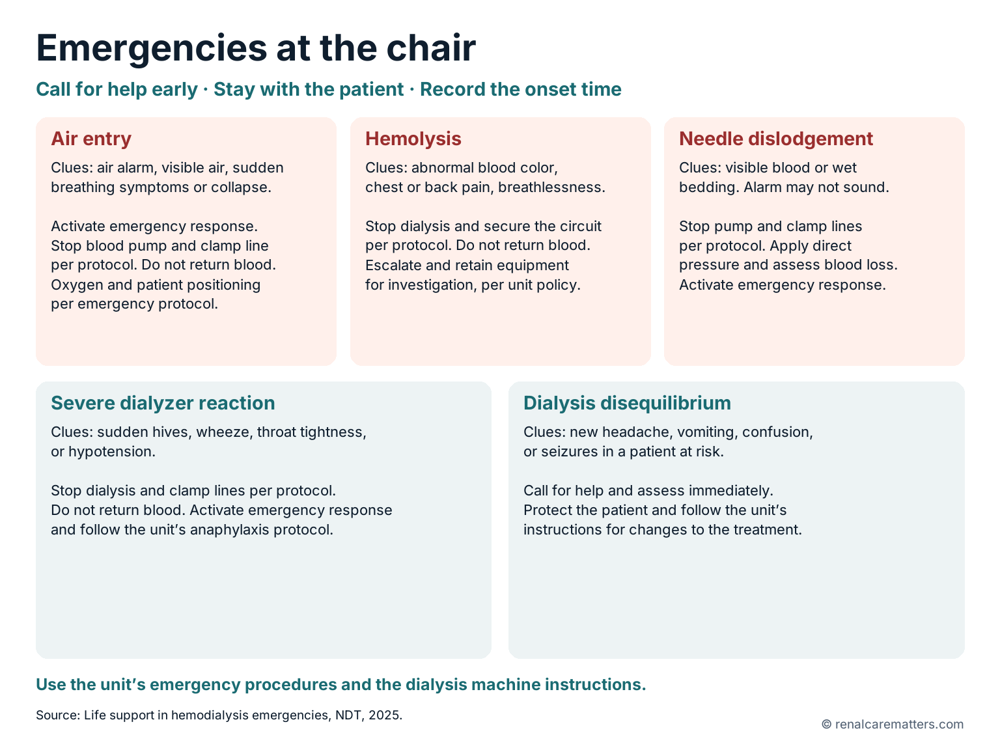

After this module you should be able to
- Carry out pre-treatment, intradialytic, and post-treatment assessments and document them.
- State the immediate priorities in symptomatic intradialytic hypotension.
- Recognize blood loss from needle dislodgement or line disconnection and act under protocol.
- Recognize hemolysis, suspected air entry, and dialyzer reactions, and state the first actions for each.
- Describe how a cardiac arrest response differs when the patient is connected to a dialysis circuit.
- Report delivered treatment and patient status after an interrupted session.
- Identify pre-treatment findings that require a call to the physician before connecting, and explain dialysis disequilibrium syndrome and its prevention.
- Link common intradialytic symptoms to their likely causes and state the first nursing response to each.
- Explain the physiological reason behind each strategy for preventing intradialytic hypotension, and recognize a recurring pattern that needs prescription review.
- Describe safe termination of treatment, the timing of medicines around dialysis, and the unit’s response to power, water, and evacuation emergencies.
A circuit outside the body
During hemodialysis (HD), roughly a cup of the patient’s blood is outside the body at any moment, moving at about 300 mL per minute. That single fact explains why dialysis emergencies unfold faster than most ward emergencies. A needle that slips out can empty a liter of blood onto the floor in under five minutes. Water is being withdrawn from a circulation that may not refill fast enough. The fluid on the other side of the membrane can injure blood cells if it is wrong. The machine has alarms for many of these, but alarms detect pressures and bubbles, not patients. The nurse who looks at the patient and the access at regular intervals is the monitoring system that the machine cannot replace.
Before, during, after
| Phase | Assess | Why |
|---|---|---|
| Before | Identity; how the patient has been since last session; weight and gain; blood pressure sitting and standing if dizzy; temperature; breathing; edema; access examination; bleeding or falls; medicines taken or held today | Sets the fluid goal; finds reasons to call the physician before starting (fever, chest pain, breathlessness, access problem, unusually large or small weight gain) |
| During | Blood pressure and pulse at the interval ordered, and whenever symptoms occur; the patient’s appearance and responsiveness; access and connections in view; arterial and venous pressures; ultrafiltration progress; blood color in the lines | Detects hypotension, bleeding, clotting, hemolysis, and reactions early |
| After | Blood pressure sitting and standing; weight against target; hemostasis at needle sites or catheter care; symptoms; ability to walk safely | Confirms the patient is safe to leave; informs the next prescription |
Why blood pressure falls. Ultrafiltration removes water from plasma. Blood volume is maintained only if fluid moves in from the tissues as fast as it is removed and if the heart and blood vessels compensate by raising heart rate and tightening vessels. Large fluid goals, short sessions, heart disease, autonomic neuropathy from diabetes, a meal during treatment, warm dialysate, and antihypertensive medicines taken beforehand all weaken that compensation. The result is intradialytic hypotension (IDH), the most common complication of HD.

Before connecting: when to call first, and the first-ever treatment
The pre-treatment assessment has one decision at its end: start as prescribed, or call the physician before starting. Once the patient is connected, blood is outside the body and anticoagulant has been given, so some problems are far easier to manage if they are found five minutes earlier. The numeric thresholds for blood pressure, temperature, oxygen saturation, and weight gain are those of the unit’s policy or the patient’s standing orders.
| Finding before treatment | Why it matters before connecting |
|---|---|
| Fever or chills | Possible access or other infection; cultures and antibiotics may need to be ordered, and the catheter may be the source |
| Chest pain, new palpitations, or fainting since the last session | Possible cardiac ischemia or arrhythmia, which fluid removal can worsen; an electrocardiogram (ECG) and physician review come first |
| Breathlessness at rest, inability to lie back, or low oxygen saturation | Usually fluid overload, which dialysis treats, but the patient may need oxygen, a changed prescription, or a monitored setting; infection and cardiac causes are also possible |
| Blood pressure above or below the unit’s thresholds | Very low pressure leaves no reserve for fluid removal; very high pressure with headache, visual change, or confusion is an emergency in itself |
| New confusion, drowsiness, weakness of one side, or slurred speech | Stroke, low blood sugar, infection, or medicine toxicity; heparin may be dangerous |
| Access problem: no thrill or bruit, swelling, redness, discharge, a catheter that has moved or has a damaged cuff or line | The access may be unusable or infected (Module 7) |
| Bleeding of any kind, black stools, a fall, a head injury, surgery, a dental extraction, or a biopsy since the last session, or a procedure planned soon | The anticoagulation order may need to be reduced or omitted; the nurse asks the question and the physician decides |
| Weight gain far above the patient’s usual | The fluid goal may exceed what can be removed safely in one session; a longer or extra session may be ordered |
| Weight at or below target, or recent vomiting, diarrhea, or poor intake | The patient may be volume depleted or may have lost body mass; removing fluid to the old target causes hypotension |
| Missed sessions | High potassium and fluid overload are likely; pre-treatment blood tests or rhythm monitoring may be ordered |
Medicines today. Ask what was taken and what was withheld this morning, by name: blood-pressure medicines, insulin and other diabetes medicines, anticoagulants and antiplatelet drugs, and any new prescription or herbal product. Record the answer. It explains much of what happens in the next four hours.
The first-ever treatment and dialysis disequilibrium syndrome. In a person with very high urea who has never been dialyzed, urea is equally high in blood and in brain tissue. Dialysis clears urea from the blood quickly, but urea leaves brain cells more slowly. For a time the brain is more concentrated than the blood, and water moves into it by osmosis. The result is brain swelling. Rapid correction of acidosis may contribute.
- Who is at risk: first and early treatments, very high urea, children, older adults, people with existing brain disease such as a previous stroke or seizures, and people who return after missing many sessions.
- How it is prevented: the first sessions are deliberately gentle, as prescribed: short, with a low blood flow rate and often a smaller dialyzer, repeated over consecutive days so that urea falls in steps. The nurse’s contribution is to deliver exactly that. Running a first session longer or faster to “clean the patient well” is the error that causes the syndrome.
- How it presents: usually in the second half of treatment or in the hours after it. Headache, nausea and vomiting, restlessness, blurred vision, and muscle cramps come first; disorientation, tremor, seizures, and coma follow in severe cases.
- What the nurse does: treats new headache with restlessness or confusion in a new patient as disequilibrium until shown otherwise. Slow or stop the treatment as the unit protocol directs, keep the patient safe from falls and aspiration, check blood pressure and blood sugar, and notify the physician at once. Stroke, low blood sugar, low sodium, and severe hypertension can look the same and are considered together. Medicines to reduce brain swelling are given only on order.
Tell new patients and their companions in advance that the first treatments are intentionally short and that a headache or a feeling of restlessness should be reported immediately and not endured.
Monitoring during treatment: what to look at, and what symptoms mean
Blood pressure and pulse are measured at the interval the unit policy sets, and more often when the patient is unstable, has a history of hypotension, or has just had an intervention. A monitoring round is more than recording numbers. In about half a minute at each station, look at:
- The face and speech. Color, sweating, yawning, a patient who has gone quiet, or who is harder to rouse than at the last round. Speak to patients who appear asleep; hypotension and low blood sugar both look like sleep.
- The access. Uncovered and visible, tape intact, needles not displaced, no blood, swelling, or wetness. Catheter connections tight and limbs not kinked.
- The lines and chambers. No kinks, clamps correct, chamber levels held, no foam or clot. Blood that is uniformly darkening may be clotting; blood that looks translucent or cherry-red suggests hemolysis.
- The machine. Arterial and venous pressures compared with the previous reading, since a trend is more informative than a single value; blood flow as ordered; fluid removed so far against the goal; time remaining.
Document at the time of observation. A reading that changed and an action taken are both recorded, with the patient’s response.
| Symptom | Common causes | First nursing response |
|---|---|---|
| Muscle cramps | Fluid removed too fast or below true target weight; hypotension; low sodium or other electrolyte shifts | Check blood pressure. Reduce or pause ultrafiltration (UF) per protocol; stretch the muscle. Report recurrent cramps: the target weight or the removal rate may need review |
| Nausea, vomiting | Most often hypotension; also disequilibrium, a reaction, cardiac ischemia, a dialysate problem | Check blood pressure first. Protect the airway and turn the head. Treat the cause |
| Headache | Disequilibrium in new patients; high blood pressure; caffeine withdrawal during a long session; a dialysate problem | Check blood pressure and neurological state. A severe or sudden headache, or one with confusion or vomiting, is reported at once |
| Chest pain (emergency) | Cardiac ischemia; hypotension; hemolysis; air entry; dialyzer reaction; less often pericarditis or a blood clot in the lung | Stop UF and reduce blood flow per protocol. Check blood pressure, pulse, and oxygen saturation; look at the blood in the lines and for air. Give oxygen per protocol, obtain an ECG, and call the physician. If hemolysis, air, or a reaction is suspected, follow the first actions for that event |
| Palpitations or irregular pulse (urgent) | Shifts in potassium, calcium, or magnesium; fluid removal; underlying heart disease | Check pulse and blood pressure; obtain an ECG or rhythm strip per protocol; stop UF if blood pressure is low; notify. With chest pain, breathlessness, or faintness, treat as an emergency |
| Itching | Starting within minutes of connection, with flushing or hives: a reaction to the dialyzer, germicide, or a medicine. Longstanding: dry skin, high phosphate, inadequate dialysis | New itching early in treatment: look for hives, wheeze, and hypotension, and respond as for a reaction. Chronic itch: report for treatment |
| Fever or chills (urgent) | Catheter-related bloodstream infection; other infection; pyrogenic reaction from water, dialysate, or a reprocessed dialyzer | Measure temperature and blood pressure; examine the access. Notify the physician; cultures and antibiotics are by order. A second patient with the same symptom triggers the cluster rule (Module 8) |
| Blood pressure rising during treatment | Fluid overload that has not yet been corrected; removal of blood-pressure medicines by dialysis; sodium gain from dialysate; pain or anxiety | Recheck after rest; ask about headache, visual change, and chest pain. Report a repeated pattern; it is associated with worse outcomes and usually leads to reassessment of target weight and medicines1 |
| Low blood sugar in a person with diabetes | Insulin or tablets taken without the usual meal; reduced insulin clearance in kidney failure; glucose lost to dialysate if a glucose-free dialysate is used | Sweating, tremor, hunger, confusion, or unexplained drowsiness: check capillary glucose immediately and treat per protocol. Do not assume hypotension |
| Restlessness or new confusion (emergency until explained) | Hypotension; low blood sugar; low oxygen; disequilibrium; stroke; sepsis; medicine accumulation | Check blood pressure, glucose, and oxygen saturation; stop UF if pressure is low; keep the patient safe; call the physician |
Two habits protect against the commonest errors. First, measure blood pressure and blood sugar before attributing any symptom to anxiety or tiredness. Second, when a symptom does not behave as expected after the first response, widen the differential and call early. Hypotension that does not correct promptly is not ordinary intradialytic hypotension (IDH).
What is known about the main complications
Frequent IDH is associated with higher mortality, cardiovascular events, and access clotting in observational studies, and repeated episodes are thought to stun the heart and reduce blood flow to the brain and gut; whether preventing episodes improves survival has not been tested in adequately powered trials.21 Prevention therefore rests on physiology and expert consensus: reassess target weight, limit weight gain between sessions, lengthen treatment to lower the hourly removal rate, consider cooler dialysate, avoid heavy meals during treatment, and review the timing of blood-pressure medicines.1
Venous needle dislodgement (VND) is uncommon but can be fatal. The European Dialysis and Transplant Nurses Association/European Renal Care Association (EDTNA/ERCA) issued practice recommendations that include consistent taping technique, keeping the access and connections visible at all times, and setting the lower venous pressure alarm limit as close as possible to the working pressure; they also warn that the venous pressure alarm may not trigger when a needle comes out, because the needle itself provides most of the resistance.3 These recommendations are consensus-based.
For cardiac arrest, the American Heart Association (AHA) 2025 guidelines apply in the dialysis unit as elsewhere: early recognition, high-quality chest compressions, and early defibrillation determine survival.4 Hyperkalemia and fluid shifts are prominent reversible causes in this population, and the guidelines address life-threatening hyperkalemia among special circumstances.5 Philippine licensing rules require every hemodialysis nurse to hold current Basic Life Support (BLS) training and at least one nurse per shift to hold Advanced Cardiovascular Life Support (ACLS) training.6
Preventing intradialytic hypotension: strategies and the reason for each
Treating an episode protects the patient today. Preventing the next one requires changing something in the prescription or in the days between treatments. The strategies below follow from the mechanism: blood volume falls when fluid is removed faster than it refills from the tissues, and pressure falls when the heart and vessels cannot compensate.21
| Strategy | Physiological reason | Nurse’s part |
|---|---|---|
| Reassess the target weight | If the patient has gained flesh weight, or the target was set too low, every session tries to remove fluid that is not excess | Report cramps, post-treatment dizziness, and washed-out fatigue; note improved appetite or loose clothing; never chase a target that the patient cannot tolerate without asking for review |
| Limit weight gain between sessions, mainly by restricting salt | Less to remove means a lower hourly rate. Thirst follows sodium, so salt restriction works where fluid instructions alone fail | Teach in food terms: fish sauce, soy sauce, bouillon cubes, instant noodles, dried and canned foods |
| Longer or additional sessions | The same volume removed over more hours lowers the rate and gives tissue fluid time to refill the circulation. Higher hourly rates are associated with higher mortality in observational data7 | Protect the prescribed time: start on time, minimize interruptions, discourage early sign-off, and document every shortened session and the reason |
| Cooler dialysate | Warm dialysate dilates skin vessels; a slightly cooler one promotes constriction and supports pressure | Set the temperature only as ordered; offer a blanket; report shivering or discomfort |
| Avoid meals during treatment in patients prone to hypotension | Digestion diverts blood to the gut and lowers vascular resistance | Advise a meal before arrival or after treatment; apply the unit policy on eating; people with diabetes need an individual plan |
| Review the timing of blood-pressure medicines | A dose taken just before treatment blunts the vessel and heart-rate response to fluid removal | Record what was taken; relay the pattern. The prescriber changes timing; the patient is told not to stop medicines on personal initiative |
| Treat anemia | Low hemoglobin reduces oxygen delivery, so the heart tolerates low pressure poorly | Give the ordered agents and iron; report hemoglobin outside the range |
| Look for heart disease and other causes | A weak or stiff heart, valve disease, arrhythmia, pericardial fluid, and autonomic neuropathy all limit compensation. A new pattern of hypotension can be the first sign of infection or a cardiac event | Report a change from the patient’s usual pattern promptly |
| Review dialysate composition | Dialysate sodium, calcium, and potassium influence vascular tone, heart contraction, and rhythm | Confirm the prescribed concentrate is the one connected |
How strong is the evidence. Most of these measures rest on physiology, observational studies, and small trials that measured blood pressure during treatment, not survival.1 Cooler dialysate reduced hypotensive episodes in small studies, but a large pragmatic trial in Canada that applied personalized cooler dialysate across whole centers found no reduction in major cardiovascular events and no meaningful difference in the fall in blood pressure during treatment.8 Cooling is therefore an individual prescription for patients who benefit and tolerate it, not a routine setting. Routine sodium profiling, in which dialysate sodium starts high and falls during the session, can reduce symptoms on the day but tends to leave the patient with a net sodium gain, more thirst, larger weight gain, and higher blood pressure before the next session; it is not recommended as a routine measure.1 Machine-based blood-volume monitoring has not been shown to improve outcomes consistently.1
Pattern recognition is nursing work. The physician sees the patient for a few minutes; the nurse sees every session. The same patient whose pressure falls in the same hour of every treatment has a prescription problem, not bad luck. Report it in a form that can be acted on: how many of the last sessions were affected, at what time into treatment, at what weight gain and hourly removal rate, what was taken or eaten beforehand, what intervention was needed, and the weight on leaving compared with target. A unit that records episodes consistently can also review them at its quality meeting.
First actions while help is coming
The steps below describe the reasoning behind first actions. The exact sequence, the volumes, and the medicines are set by your unit’s protocol and the physician’s orders, and each should be rehearsed in simulation on your own equipment. In every case: call for help early, stay with the patient, and note the time.
| Event | Recognize | First actions and the reason for each |
|---|---|---|
| Symptomatic hypotension | Dizziness, yawning, nausea, cramps, pallor, sweating, falling blood pressure, reduced responsiveness | Stop or minimize ultrafiltration (stop removing volume). Recline the patient with legs raised if not breathless (return blood to the heart). Check blood pressure, responsiveness, and the access for bleeding. Give fluid or oxygen as your protocol or order allows. Notify the physician. If there is no prompt recovery, or there is chest pain, arrhythmia, or altered consciousness, treat it as an emergency: the cause may be cardiac, bleeding, or sepsis. |
| Needle dislodgement or line disconnection | Visible blood, wet clothing or bedding, sudden hypotension; an alarm may or may not sound | Stop the blood pump and clamp the lines (stop the loss). Apply firm direct pressure to the site with gloved hand and gauze. Call for help. Assess consciousness, breathing, pulse, and blood pressure; lay the patient flat. Estimate blood loss. Further steps, including fluids, oxygen, and whether any blood is returned, follow protocol and physician direction. |
| Suspected hemolysis | Blood in the venous line looks translucent, cherry-red or dark “port-wine”; chest, back, or abdominal pain; breathlessness; several patients affected at once suggests a water or dialysate cause | Stop dialysis and clamp the lines. Do not return the blood (it carries released potassium). Keep the circuit and dialysate for investigation. Monitor the heart rhythm, call the physician, and prepare for urgent potassium and hemoglobin tests. Check other patients on the same supply. |
| Air detector alarm or suspected air entry | Air alarm; visible air or foam in the venous line; sudden cough, chest tightness, breathlessness, or collapse | The machine clamps the venous line and stops the pump: do not override. Never return blood through a line that contains air. If air may have entered the patient, call for emergency help, give oxygen, and position the patient as the unit’s emergency protocol directs. The traditional teaching is the left side with the head down, to keep air away from the lung and brain circulation; protocols differ, so know your unit’s before you need it. |
| Dialyzer or severe allergic reaction | Within the first minutes: itching, hives, flushing, wheeze, throat tightness, chest or back pain, hypotension | Stop dialysis, clamp the lines, and do not return the blood. Call for emergency help and manage as anaphylaxis under protocol. Keep the dialyzer and record its type and batch. |
| Cardiac arrest | Unresponsive, not breathing normally, no pulse | Call the code and start chest compressions at once; send for the defibrillator. A second person stops the blood pump. If a trained nurse can return the blood quickly without delaying compressions, do so; otherwise clamp and disconnect, leaving the needles or catheter in place for access. Recline the chair flat or move the patient to a firm surface. Tell the team the patient is a dialysis patient: hyperkalemia is a leading reversible cause. |
After any interruption, the record and the handoff state what was delivered and how the patient is, not only that an event occurred: time on treatment against the time prescribed, fluid removed against the goal, the patient’s vital signs and symptoms now, what was done, who was informed, and where the patient is going. The nephrologist needs these to decide whether an additional session is required.


Ending treatment, discharge, and handoff
Stopping at the right time. Treatment ends when the prescribed time has been delivered, not when the fluid goal is reached and not when the shift is running late. Time lost to alarms and bypass is made up where the schedule and the order allow, or reported. A patient who asks to stop early is told plainly what shortened treatment costs, and the request, the time delivered, and the explanation given are documented.
Returning the blood. Blood in the circuit is returned with saline, following the machine and unit procedure. Air is never used to push blood back, because nothing then stands between the air and the patient. The air detector and venous clamp remain active throughout, the nurse stays at the station and watches the venous line, and the return stops as soon as the line is acceptably clear. The saline given is counted in the fluid balance. Blood is not returned when hemolysis or a severe reaction is suspected, when air is in the venous line, or when the circuit is clotted, as the earlier table explains.
Fistula or graft. Each needle is withdrawn completely, at the angle it was inserted, before pressure is applied; pressing while the needle is still in the vessel cuts the wall. Pressure is applied with two fingers over gauze, at the skin puncture and just above it where the vessel was entered, firmly enough to stop bleeding and lightly enough that the thrill can still be felt beyond the fingers. It is held without lifting to look for the time the unit procedure states. Clamps are used only where policy allows and never on an access with a weak thrill. After dressing, confirm the thrill and bruit. Bleeding that takes much longer than this patient’s usual is reported: the causes include too much anticoagulant, a narrowing downstream that raises pressure in the access, and a needle site that has been used too often.
Catheter. Each lumen is flushed and then filled with the locking solution in the volume printed on that lumen, as ordered. Clamps are closed before the syringe is removed, and new sterile caps are applied with the aseptic technique of Module 7. The exit-site dressing is checked and changed if wet, loose, or soiled.
Post-treatment assessment and discharge. Blood pressure and pulse are taken sitting and then standing; weight is measured and compared with the target and with the fluid removed; needle sites or catheter are checked again; symptoms are asked about directly. The patient is ready to leave when all of the following hold:
- Blood pressure is within the patient’s acceptable range without a significant fall or dizziness on standing.
- Needle sites are dry under the dressing, with thrill present, or the catheter is capped, clamped, and dressed.
- There is no chest pain, breathlessness, new confusion, or active bleeding.
- The patient can walk as usual, or the usual escort is present.
- A person with diabetes has had blood sugar checked where indicated and has food available.
A patient who does not meet these stays for observation and the physician is told. Weight well above or below target at the end is reported, not simply recorded.
Teaching before the patient leaves. Keep the dressing on for the time the unit advises. If a needle site bleeds at home, press with clean gauze or cloth, raise the arm, and come back or go to an emergency department if it does not stop. Feel the thrill daily and report its loss the same day. Do not allow blood pressure measurement, blood draws, or heavy carrying on the access arm. Expect to be tired; dizziness on standing, chest pain, breathlessness, fever, or bleeding are not expected and need a call. Confirm the next session, and the salt and fluid plan until then.
Handoff to a ward or another facility. Inpatients and transferred patients return to staff who did not see the treatment. A structured format such as Situation, Background, Assessment, Recommendation (SBAR) keeps the content complete; studies of structured handoff suggest improved safety, though the evidence is of moderate quality.9 For a dialysis handoff the content is:
- Time delivered against prescribed, fluid removed against goal, weight before and after.
- Vital signs at the end and any events during treatment, with what was done.
- Anticoagulant given and when, so that the ward knows the bleeding risk for the next hours and the timing of any procedure.
- Medicines given during dialysis, and medicines that were held for dialysis and are now due.
- Blood tests drawn, and whether any result is pending or critical.
- Access condition, dressing, and catheter lock; an instruction that the dialysis catheter is not to be used for other purposes unless the nephrologist orders it.
- What to watch for and when the next treatment is planned.
Medicines around dialysis: what is removed, what is given, and when
The principle of removal. A dialyzer removes a drug in the same way it removes urea. Removal is greater when the molecule is small, dissolves in water, is carried free in plasma and not bound to protein, and stays mostly in the bloodstream instead of spreading widely into tissues. Large, highly protein-bound, or tissue-distributed drugs are removed little. High-flux membranes remove larger molecules than low-flux ones, so the same drug can behave differently in two units. This is why the timing of a dose relative to dialysis is part of the order, and why the nurse confirms it and does not assume.
| Situation | Reasoning | Nursing action |
|---|---|---|
| Medicines that dialysis removes, including many antibiotics | A dose given shortly before treatment is partly washed out, leaving the patient under-treated | Give after treatment, or in the last part of the session when the order says so. On a ward, withhold a pre-dialysis dose only if the order says so, and make sure the post-dialysis dose is actually given |
| Erythropoiesis-stimulating agents | Given at dialysis so that doses are supervised and no extra injection visits are needed | Check blood pressure and the latest hemoglobin against the order before giving; give by the route ordered |
| Intravenous iron | Reactions are uncommon but can be severe | Give at the rate and dilution for that product, with resuscitation equipment at hand; observe during and after the dose; withhold and ask if the patient has an active infection |
| Intravenous vitamin D analogs | Suppress parathyroid hormone but raise calcium and phosphate | Check that recent calcium and phosphate results allow the dose under the order |
| Blood-pressure medicines | Some are removed by dialysis and some are not; a dose before treatment can contribute to hypotension, and a dose withheld can lead to high pressure afterward | Follow the individual plan; record what was taken; report hypotension or rising pressure so timing can be reviewed |
| Insulin and other diabetes medicines | Failing kidneys clear insulin slowly, appetite on dialysis days is variable, and meals are displaced by the schedule | Ask about dose and food today; check glucose per protocol and with any suggestive symptom; keep a fast-acting sugar source at hand |
| Anticoagulants and antiplatelet drugs taken at home | Their effect adds to the heparin given for the circuit | Make sure the prescriber of the dialysis anticoagulant knows; watch needle sites longer |
| Phosphate binders, water-soluble vitamins, and other routine medicines | Binders work only with food; water-soluble vitamins are lost in dialysate | Reinforce binders with meals and vitamins after treatment as prescribed |
Three checks for any medicine given at the station. The order states the timing relative to dialysis. The patient’s identity and allergies are confirmed at the chair, where patients are easily confused with the person who usually sits there. The dose is recorded on the treatment sheet and, for inpatients, on the ward medication record, so that it is neither omitted nor given twice. When a ward nurse or a relative asks whether a medicine should be given before dialysis and the order is silent, the answer is to ask the prescriber or pharmacist, not to apply a general rule.
Unit-wide emergencies and readiness
The earlier table dealt with one patient in trouble. Some events affect every station at once, and the response depends on preparation done on ordinary days.
Readiness. Survival from cardiac arrest depends on immediate chest compressions and early defibrillation, which requires that the defibrillator is present, charged, and familiar.4 The emergency cart and defibrillator are checked at the frequency the unit sets, by a named person who signs for it: pads and electrodes in date, battery charged, drugs and airway equipment complete, and the seal intact. Oxygen cylinders are checked for content and a working regulator, and suction is tested by turning it on. Licensing rules require current life-support training for nursing staff, as the evidence section notes.6 Roles are assigned at the start of the shift, before any event: who leads, who compresses, who manages the circuit, who brings the cart, who calls the physician and the ambulance, and who stays with the other patients. A short drill on the unit’s own equipment teaches more than a lecture.
Power failure. Brownouts are part of Philippine practice. When power is lost, the machines alarm and dialysate flow and heating stop. Many machines have a battery that keeps the blood pump and safety monitors running for a limited time; it does not continue dialysis. The sequence of reasoning is:
- Go to the patients, not the switchboard. Check each one and each access. Reassure; a dark, alarming room frightens people.
- Find out whether the generator has started and how long the outage is expected to last. The decision to wait or to end treatments belongs to the charge nurse and physician under the unit plan, and takes account of battery time and the risk of clotting in a circuit that is not moving.
- If blood must be returned without power, it is done by hand with the pump crank, in the direction and manner the manufacturer describes, using saline. During manual return the air detector and venous clamp may not be protecting the patient. The nurse watches the venous line continuously and stops before any air reaches it. Blood is never returned through a line that contains air.
- Record for every patient the time treatment stopped, time delivered, fluid removed, whether blood was returned, and condition on leaving, and report to the nephrologist so that further treatment can be arranged.
- When power returns, machines and the water system are not assumed ready. Interrupted disinfection cycles are repeated and tested, and the technician checks the water system before treatments resume (Module 8).
Water or dialysate failure during treatment. If the water supply fails, the loop pressure drops, or a required water test fails while patients are connected, machines go into bypass or alarm. Blood continues to circulate but no dialysis occurs. If the supply cannot be restored promptly, treatments are ended in an orderly way with blood returned as usual, unless the reason for stopping is suspected contamination with patients showing symptoms, in which case the affected patients are managed as the hemolysis and cluster guidance directs and their blood is not returned.
Fire, earthquake, flood, and evacuation. When the building must be left within minutes, a normal return of blood for every patient is not possible, and the unit plan sets the method. The usual principles are:
- Each station has an emergency disconnect kit, checked regularly, with the items the unit plan specifies, such as clamps, caps, gauze, and tape.
- “Clamp and disconnect”: stop the blood pump, clamp the access lines and the bloodlines, and separate them, leaving the needles or catheter in place, capped and secured, to be dealt with at the assembly point. The blood in the circuit is sacrificed. Access needles are not pulled in a hurry, because an uncontrolled fistula bleed in a stairwell is more dangerous than a clamped needle.
- Patients who can walk are released first and directed out with a staff member; those who need help follow with assistance. This clears the room fastest.
- During an earthquake, staff and patients protect themselves until the shaking stops, and disconnection follows.
- Someone takes the patient list and the emergency equipment. At the assembly point, patients are counted, accesses are checked and needles removed with proper hemostasis, and each patient is assessed.
Disaster planning for people on dialysis begins long before the event. Recommendations developed after major disasters emphasize advance preparation by units and patients, including patient education and plans for obtaining treatment elsewhere when the home unit cannot operate.10 In a country with typhoons, floods, and earthquakes, each patient should know what to do if the unit is closed: the emergency diet and fluid limits taught by the unit, the contact numbers, and the alternative centers, and should carry a card or copy of the dialysis prescription, medicines, and hepatitis status.
After any event. Once patients are safe, the team holds a short debrief the same day: what happened, what went well, what was missing or slow. An incident report is filed with facts and times, without blame. Equipment used is replaced and the cart resealed. The event is reviewed at the quality meeting, where the question is what in the system should change, and staff who were distressed by the event are followed up. A near miss, such as a needle found half out or a cart found with an expired item, is reported in the same way, because it is the cheapest warning the unit will receive.
Case: Ninety minutes in
Mrs. Leonora, 68, has diabetes and dialyzes through a right upper-arm fistula. Her fluid goal today is 3.2 liters over 4 hours. Ninety minutes in, she says she feels dizzy and is yawning; her blood pressure is 82/48 mmHg, down from 138/76. You respond, and she recovers. An hour later, while you are at another station, a colleague notices a dark stain spreading on the blanket that Mrs. Leonora had pulled over her arm. The machine has not alarmed. Treatment is stopped at 2 hours 40 minutes with 1.9 liters removed.
Before reading on, decide what you would assess, what you would communicate and to whom, what you would teach, and what would make you escalate. Then compare with the outline below.
Assess
Communicate
Teach
Escalate
Check your understanding
Each visit draws 5 questions at random from this module’s 15-question bank, in a shuffled order. Choose the single best answer for each, then select Check answers; a rationale appears under every option. Reload the page or select New set of questions for a different mix. Nothing you select is sent anywhere; scoring happens in your browser.
With your preceptor
In the simulation area with a mannequin or simulated arm, your unit’s machine, and your preceptor. Each scenario is run on the unit’s own protocol. These are prompts for supervised learning, not a procedure. Your preceptor observes and signs off each item on the unit’s own competency form; the educator page has a printable version.
- Completes and documents pre-, intra-, and post-treatment assessments for three full sessions.
- Symptomatic hypotension: performs first actions in the correct order and escalates.
- Needle dislodgement: stops the pump, controls bleeding, calls for help, and estimates loss.
- Hemolysis and dialyzer reaction: states and demonstrates “stop, clamp, do not return blood.”
- Air alarm: responds without overriding the clamp; positions a simulated patient correctly.
- Cardiac arrest: starts compressions within seconds; a second rescuer manages the circuit.
- Writes a complete post-event record and delivers a structured handoff.
Read next on this site
- Cardiac Arrest Response in a Dialysis UnitThe site’s guide to cardiac arrest response in a dialysis unit. Assigned reading for this module.
- Volume, Blood Pressure, and Tolerance of HemodialysisWhy blood pressure falls during dialysis and how prescriptions are adjusted.
- Leg Cramps and Skin Changes on DialysisCramps and other intradialytic symptoms.
- Finding Your True Dry WeightReassessing target weight after hypotensive episodes.
- Potassium and HyperkalemiaHyperkalemia as a reversible cause of arrest.
- American Heart Association 2025 resuscitation guidelinesPrimary source (external site).